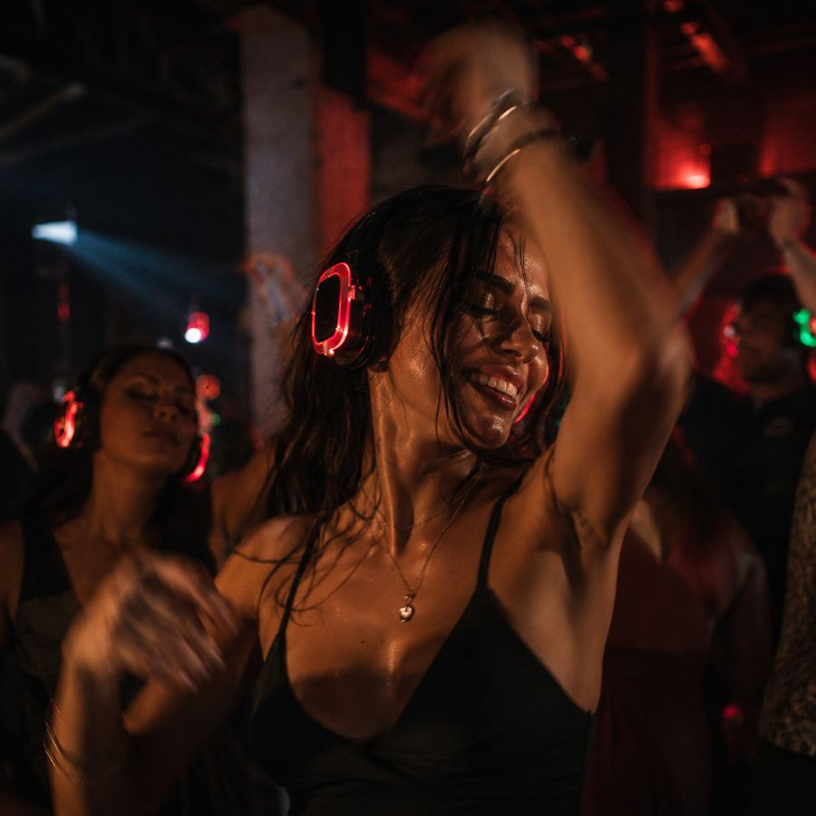
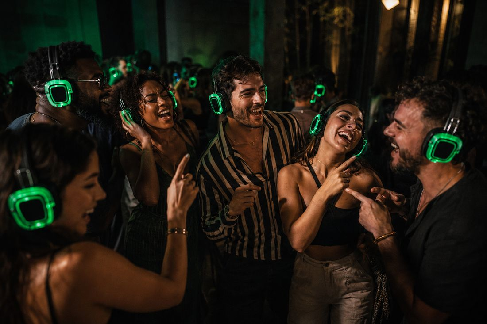

Кожен гість чує музику у власних навушниках і сам вирішує, який із трьох каналів слухати — а зовні панує повна тиша. Перемикайтесь між ними будь-коли за вечір, скільки завгодно разів.
Звичайні колонки нав'язують усім один плейлист і одну гучність, а після 23:00 починаються скарги. Silent disco прибирає цей компроміс: три канали, кожен регулює звук під себе, а ззовні лишається тиша.
Один плейлист на всіх. Хтось нудьгує, комусь голосно. О 23:00 — сусіди, охорона, «зробіть тихіше». Фото виходять темні й однакові.
Три канали під різний настрій, гучність під себе, світло LED у кожному кадрі. Танці хоч до ранку — і повна тиша ззовні.
Кажете дату, привід і скільки чекаєте гостей. Далі — наша турбота.
Підтверджуємо дату, дивимось на ваш простір і підбираємо канали під настрій події.
Приїжджаємо заздалегідь, розставляємо світло й звук і ловимо чистий сигнал на всіх каналах.
Гості вдягають навушники, ловлять свій канал — і зал оживає до ранку. Прибирання теж на нас.
RED, GREEN, BLUE звучать паралельно. У кожного гостя — свій ефір, і всі танцюють в одному залі.
Драйв, хіти чи повільне — гість перемикає канал одним дотиком і залишається там, де йому добре.
Кожен виставляє звук під себе. Ніхто не виходить із дзвоном у вухах — комфортно й дітям, і старшим.
Навушники на шию — і розмова йде звичайним голосом. Без «що?» і «повтори!» крізь гуркіт колонок.
Підсвітка на кожному гості перетворює зал на готову картинку. Фото й відео виходять яскравими без окремого світлового обладнання.
Танці «в тиші» — незвичне відчуття вже з перших хвилин. Гості проводять час не так, як на звичайній вечірці.
Silent disco під ключ — комплект обладнання, логістика й супровід у межах однієї послуги.
Від 40 LED-навушників, 3 канали, передавачі та запасні навушники в комплекті.
Привозимо, збираємо систему, налаштовуємо канали й тестуємо сигнал до старту.
Три канали, зібрані під ваш настрій і формат події — DJ не обов'язковий.
Ведемо технічну частину протягом вечора, а після завершення забираємо все обладнання.
Додаткова опція: ролик вашого вечора, готовий до сторіз і публікації.


Одне й те саме обладнання, різна подача — під те, що потрібно саме вам.
Танці до ранку без обмежень майданчика — і жодних скарг від сусідніх номерів готелю.
Формат, який запам'ятають — без узгоджень гучності з бізнес-центром чи офісним поверхом.
Особиста гучність допомагає зануритись у практику — без гучних колонок, що збивають фокус.
Від дитячого свята до дорослої вечірки — гучність під вік і настрій кожної компанії.
Парк, дах, подвір'я за містом — де завгодно, де традиційні колонки викликали б питання.
Проєктор, екран і звук просто у навушниках — фільм для всіх, без гучного динаміка на подвір'ї.
Випускний, посвята, вечірка гуртожитку — формат, який не заведе розмову з охороною.
Щось нестандартне на думці? Опишіть ідею — підберемо формат під неї.
Мінімальне замовлення — 40 навушників на 4 години. Посуньте повзунок і додайте опції, щоб побачити орієнтовний бюджет для вашої події у Києві та області.
Ми відповідаємо за результат вечора, тож фінансовий ризик беремо на себе.
Ми ще збираємо відгуки з перших київських подій — а поки чесно опишемо, що зазвичай відбувається на такому форматі.
Перші 5–10 хвилин гості озираються одне на одного: незвично танцювати в тиші. Потім хтось перший заплющує очі й забуває про це.
Коли частина залу раптом сміється чи підспівує одне слово, а музику чути тільки їм, це стає кумедною грою для решти гостей.
О тій порі, коли звичайна вечірка вже стишується через скарги чи втому діджея, тут танцпол лише набирає обертів.
Орієнтовно 1 м² на людину для активних танців, менше — якщо частина гостей сидітиме. Скажіть нам розмір залу й кількість гостей — порахуємо, чи вистачить простору, і порадимо оптимальну кількість навушників.
Так, але обладнання залежить від живлення і не любить вологу. У дощ або без розетки поруч потрібен запасний план — намет, навіс або перенесення в приміщення. Обговорюємо це заздалегідь, коли дізнаємось локацію.
Навушники працюють 10+ годин без підзарядки — вистачає на будь-який вечір з запасом. Приїжджаємо із зарядженим комплектом, тож про це можна не думати.
Не обов'язково. Наймати живого DJ — це окрема стаття витрат, зазвичай суттєва сума за вечір. Ми наперед готуємо три плейлисти під ваш настрій, тож DJ потрібен, лише якщо хочете живий мікс саме на місці.
Ставимо один пункт видачі й повернення на вході, щоб нічого не губилося. При потребі використовуємо просту систему обліку, щоб наприкінці вечора точно знати, що все зібрано — без незручних питань до гостей.
Так. У кожного гостя — особиста гучність, тож дитячий слух легко вберегти від зайвого звуку. Для подій із малими дітьми радимо одразу обмежити гучність на нижчому рівні — про це подбаємо ще до початку.
Таке трапляється на живих вечірках, тому ми закладаємо невеликий заставний внесок за комплект, який повертається одразу після того, як усе обладнання здано в цілості. Якщо один-два навушники не повернули чи пошкодили — покриваємо це із застави, без додаткових розбирань із вами. Про суму й умови домовляємось заздалегідь, до самого івенту.
Залиште заявку — ми зв'яжемося, перевіримо, чи вільна дата, підберемо формат і підтвердимо бронь після узгодження.
Дякуємо! Ми зв'яжемося найближчим часом, щоб узгодити деталі й підтвердити дату вашого вечора.